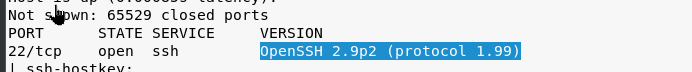

We have the information about openssh from nmap scanning.

but sometimes we cannot see the version of ssh and when these times we need to find out on our own.
What we do is trying to connect ssh to this spesific port and see if it gives us any information about what's running. And this is the most of the enumeration we can do about ssh except attempting to login but this is the explotation part.

so we cannot establish in that way. We can use their offer.

this is going to want a cipher and again we will use their offer.

so we dont have password and we can terminate this. Well why did we do this? because sometimes what happens is a banner is exposed and the banner will say hey we're running ssh version x.y.z and this is built by this person this company etc. So we looked for a banner here but we couldn't take we want but fortunately we have version information from nmap scanning.
So final state of our enumeration notes is like that.